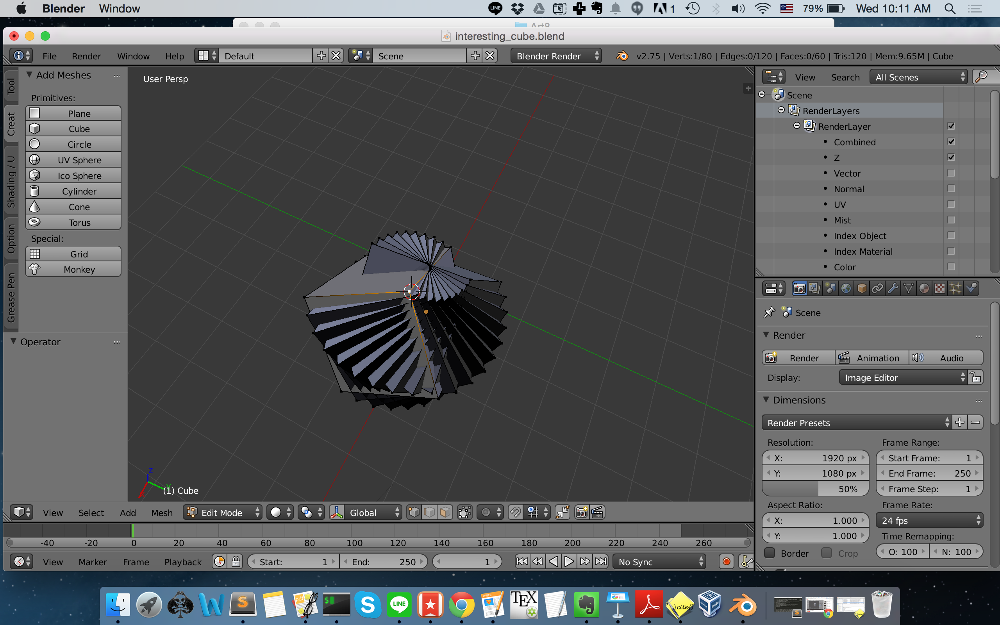
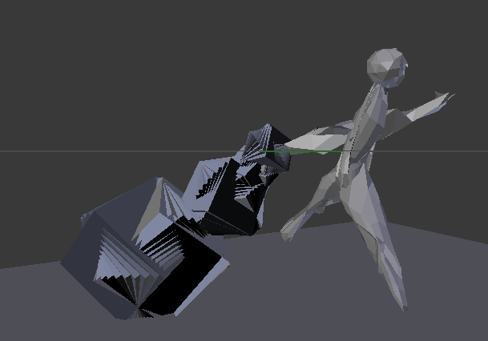
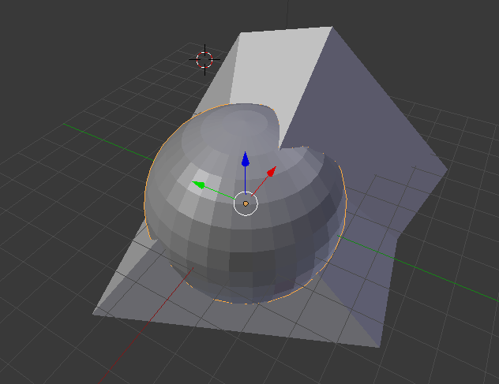
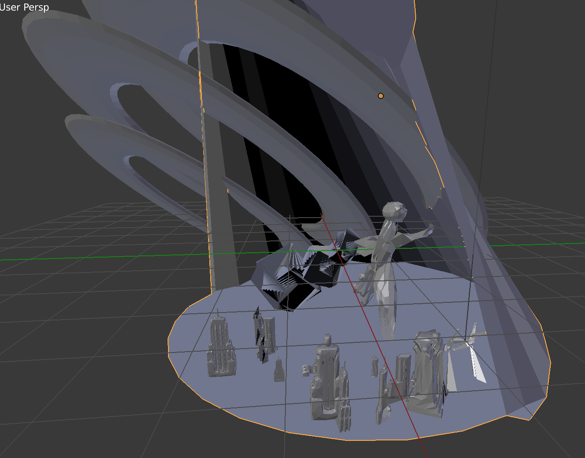
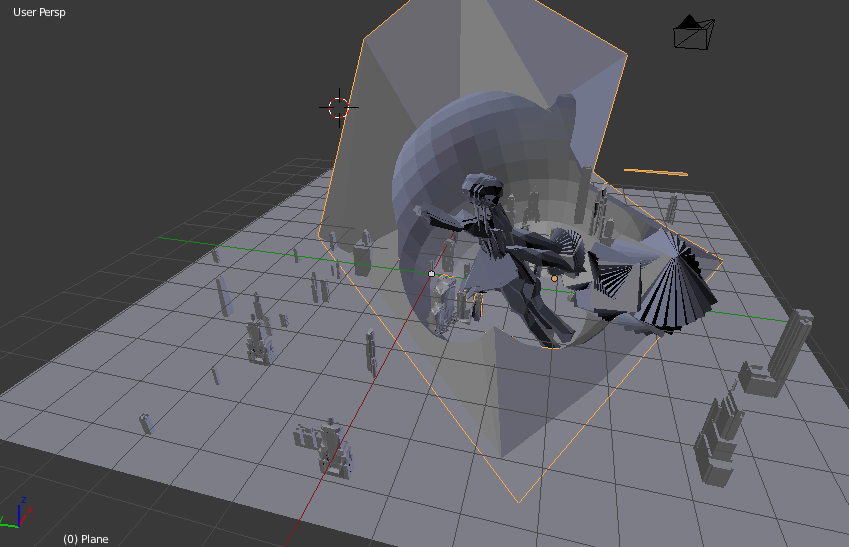
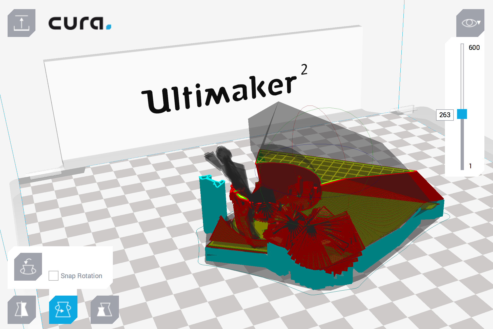
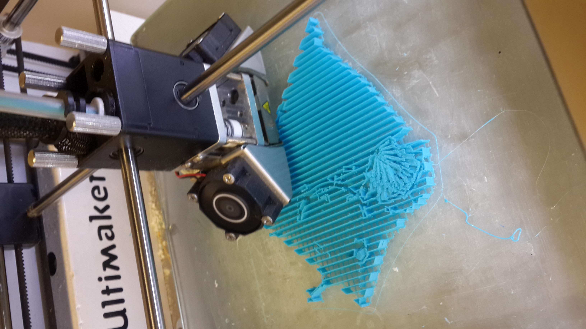
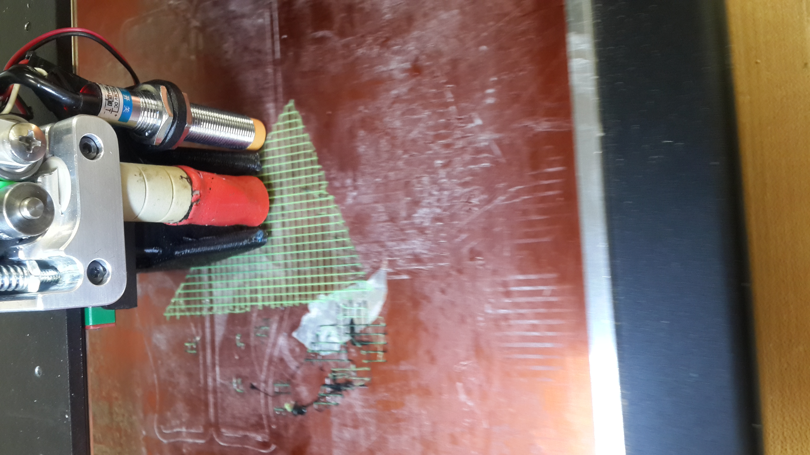

Inspired by the Cubist and futurist works in the late 18th century, in this project I explore different types of digital and physical media to construct an immersive experience that captures dimensionality of space, time and relations of an everyday cityscape. Yet, The Scope is not simply an augmentation of man’s sensory experience but more importantly it highlights the central tension in the subject of the surveillance: the role of the man and the machine. The physical obstructions around the lens limits the scope and capacity of a virtual reality. A major challenge in the current state of surveillance is its inability to transform digitized facts and data collected by the computer into reason, decisions, and action onto the physical world.The conflict between the man and the machine is also manifested in the process of making, by regarding this project as 1) a collaboration between the man and the machine and 2) a digital representation failed to fabricate into physical realizations.






Originally, my goal for this project was to make a cubist scultpure and 3D print it, but because of technical difficulties trying to get my design file to be properly 3Dprintable, the print was unsucessfully for many times. Nevertheless, a lot of design considerations were put into the central figure itself, which could still be seen in the video. There are many things that I tried to explore with this first mixed media/sculpture project:
1)Cubism + 3D printing: Motion/ Geometry
How does the medium of 3D printing and painting on a 3D object enable us to represent spatial and temporal changes? (similar to what cubism and futurist paintings tries to do in 2D)
2) Interplay between Man & Machines:
This is the first time that I am using the 3D modeling software Blender. As a beginner learner, I was conscious of what I want the artwork to look like versus what the machine (or my knowledge of it) is capable of doing, how can I apply what I learned and transform it into what I want the thing to look like? Throughout the design process, There are times when I had control over the machine, but I have also let room for the machine to do works of its own . (such as the pleasant surprises such as the rotating cube which “accidentally” yielded an even more enhanced suitcase than I had originally drawn on my sketchbook).
When I imported and remixed the Chicago Updated building models, the buildings were straight, rigid, and photorealistic, the role of the human was essential to manipulate it into a more natural and meaningful form. Therefore I thought of this project as a collaboration between the man and the machine. This is an interesting dualism because I believe that the the role and exchanges between the man and the machine is another inspiration adapted from the theme of this project: surveillance. The making process also provoked me to think: how can people better design software and machines that facilitates (or even augment) creative play?
3) The concept of negative space and surveillance:
This aspect of the project was primarily inspired by some of Sarah Sze’s architectural works, which featured a unnoticeable negative space in the public display in the New York high-line. The negative space concept is strongly related to the theme of surveillance in the sense that surveillance is ubiquitous, overarching but often imperceptible. A sphere is carved out of the larger geometric background— almost like an invisible cage— where the motion and changes of events objects and people are under surveillance.

